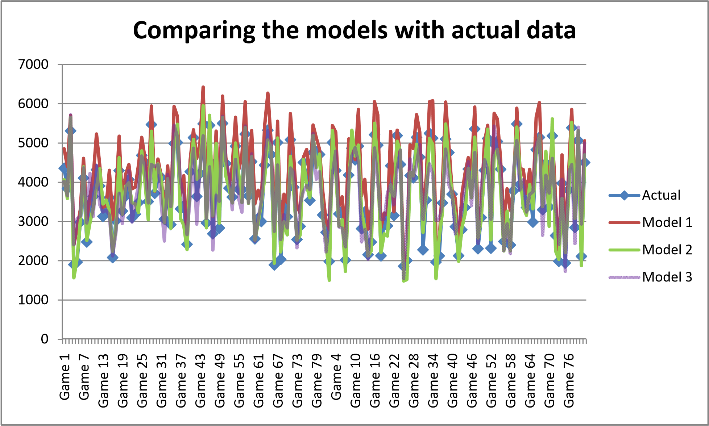

Analysis of three black‐box type demand forecasting models
Objective
To help the Fenway Park concessions evaluate and compare the quality of these three competing forecasting approaches.
Introduction
Hot dogs are an integral part of the experience of a Red Sox baseball game in Boston. The hot dogs, or frankfurters, that are sold at the ball park are called Fenway Franks. During the regular season, a total of 81 games are played at Fenway Park, each one bringing around 37 thousand fans. Some games bring more fans than others: attendance depends on many factors, from the weather to the reputation of the opposing team. Demand for hot dogs depends not only on attendance, but also on many other factors, such as temperature or the time of the day when the game takes place.
Although it is not a simple task, estimating the demand for hot dogs during each one of the 81 games of a season is very important for concessions at Fenway. On the one hand, underestimating the demand would mean – besides unsatisfied and hungry fans – lost profit: the cost of a lost sale is estimated at $3. On the other hand, overestimating the demand would mean an excess of unsold hot dogs at the end of the game: the cost of an unsold hot dog, including ingredients, energy and labor, is estimated at $2.
A year ago, a group of concessions at Fenway hired three consulting firms for preparing as many mathematical models, one by each firm, to predict the demand for hot dogs during each game of the season based on multiple factors that are known as late as just two days before the game: air temperature, rain, the opposing team, time of day for the game, injured players who would be absent, and dozens of other factors.
After a year of frantic data crunching, the consultants have presented their final models to the Fenway concessions. You have been hired as an independent expert to evaluate the quality of the forecasts produced by their proposed models. Due to intellectual property issues, you are not allowed to see the actual models, only the forecasts they produced. They are, for your purposes, to be treated as black boxes.
As input data, you have been given the forecast that each model yielded for hot dogs demand in each game in the two most recent seasons. You have also been given by the concessions a detailed record of the actual demand for hot dogs in each of the 81 games of these two seasons.
Visualization of raw data

Comparison of the mean deviation (MD) among the three models
| Model | MD | % deviation from mean of actual sales (3750.056) |
|---|---|---|
| M1 | ‐526.988 | ‐14.0528 |
| M2 | 24.45679 | 0.652171 |
| M3 | ‐11.6852 | ‐0.3116 |
As seen above M1 exhibits the most bias. M3 has the least bias. This is done to
Models 2 and 3 have an average error in the vicinity of only a few dozen hotdogs from the actual. In fact,
M2 & M3 have a MD equivalent to less than 1% of the average hot dog sales per game.
However, Model 1 seems to consistently over‐estimate the demand for hotdogs by an average of 500 units per game ‐ or about 14% of the average hot dog sales per game). Therefore, we can say that – based on the historical data we have – Models 2 and 3 are less biased than Model 1. Model 1 is the most biased of the pack and it is OVER forecasting.
Calculation of RMSE of each of the models
| Model | RMSE |
|---|---|
| M1 | 597.6846 |
| M2 | 286.457 |
| M3 | 500.2935 |
As seen above, M2 has an error that is half of the other models & hence is the most suitable forecasting model besides also have a small deviation in forecasted sales from the actual demand.
Effect of underestimating & overestimating by the models
As mentioned in the introduction,
| Forecasting Issues | Effect | Cost |
|---|---|---|
| Underestimating | Unsatisfied & hungry fans | $3 per lost sale |
| Overestimating | Waste of ingredients, energy & labor | $2 per unsold hot dog |
Calculations of the lost‐sale or unsold inventory by the three models.
| Metric | M1 | M2 | M3 |
|---|---|---|---|
| Shortage of hotdogs | 0 | 21765 | 32883 |
| Cost of Lost Sales $ | 0 | 65295 | 98649 |
| Unsold Hotdogs | 85372 | 17803 | 34776 |
| Cost of Unsold hotdogs $ | 170744 | 35606 | 69552 |
| Total Loss $ | 170744 | 100901 | 168201 |
| Least Total loss |
Conclusion
When comparing the MD, RMSE among the three models, M2 seems to be the most accurate in its predictions and it also manages to provide the least total loss & a balance between the cost of lost sales and unsold hot dogs better than the other two models.
Therefore, from among the three available options, M2 seems to make the predictions that make most economic sense.